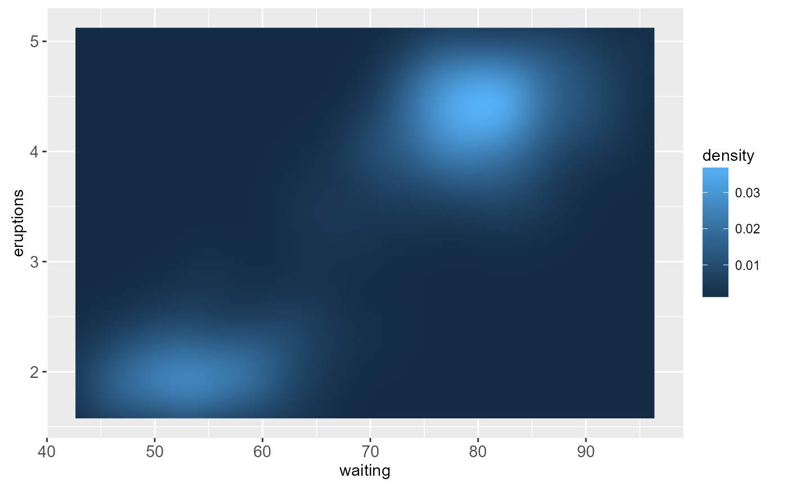
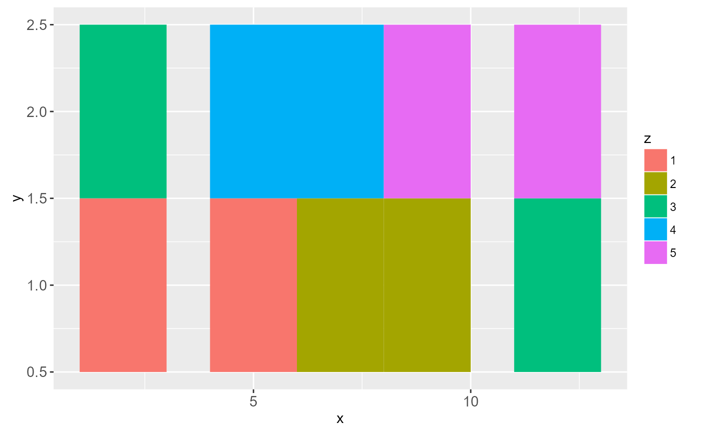
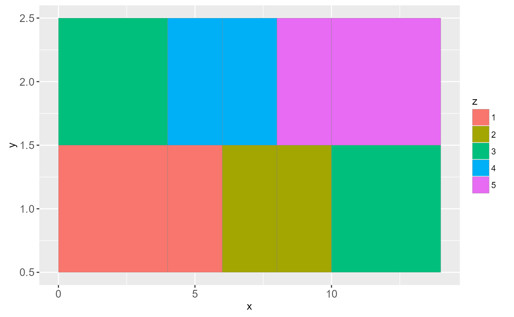
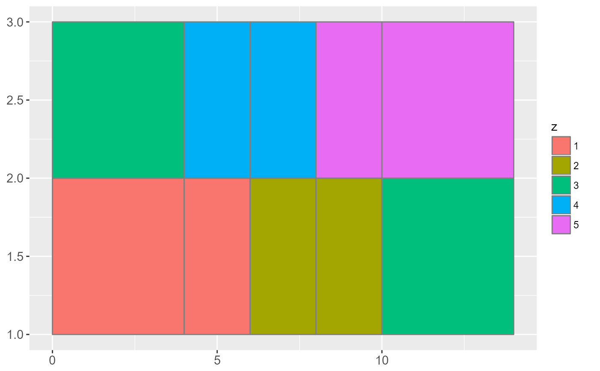
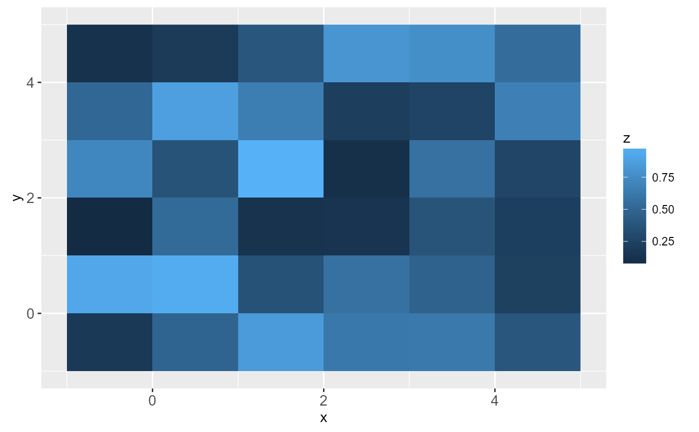
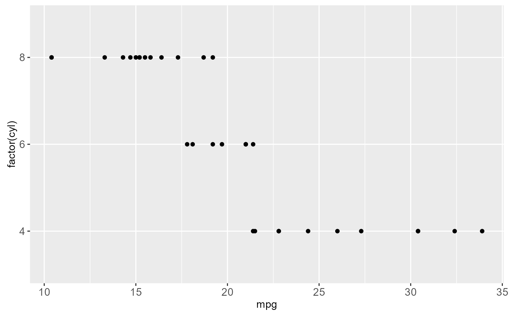
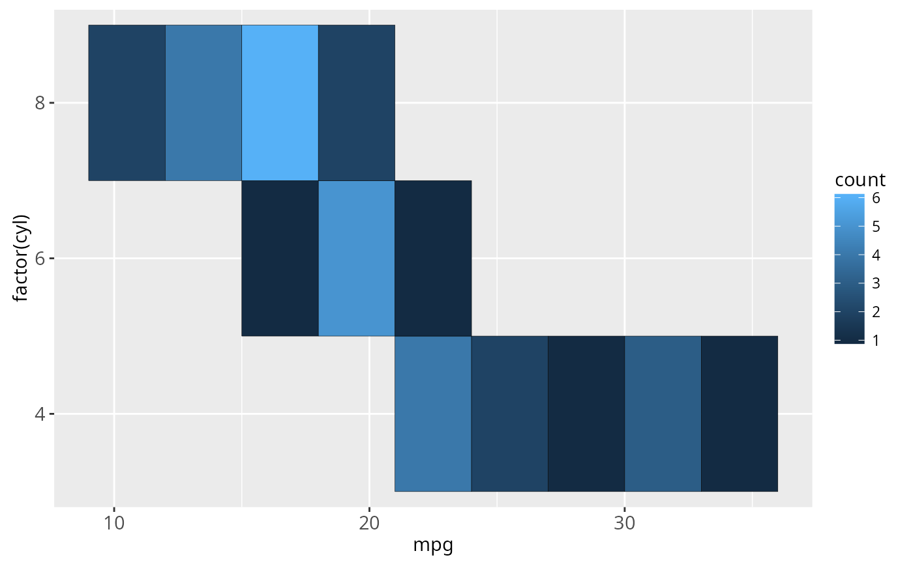
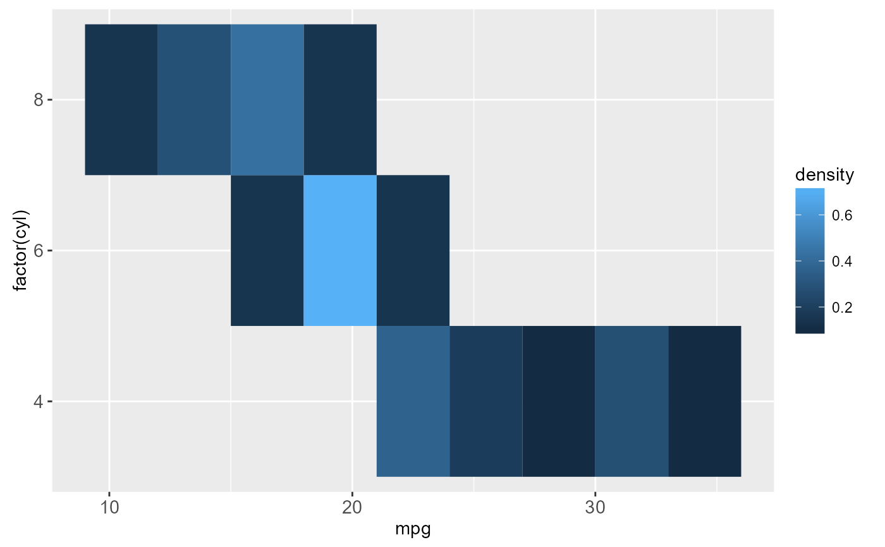
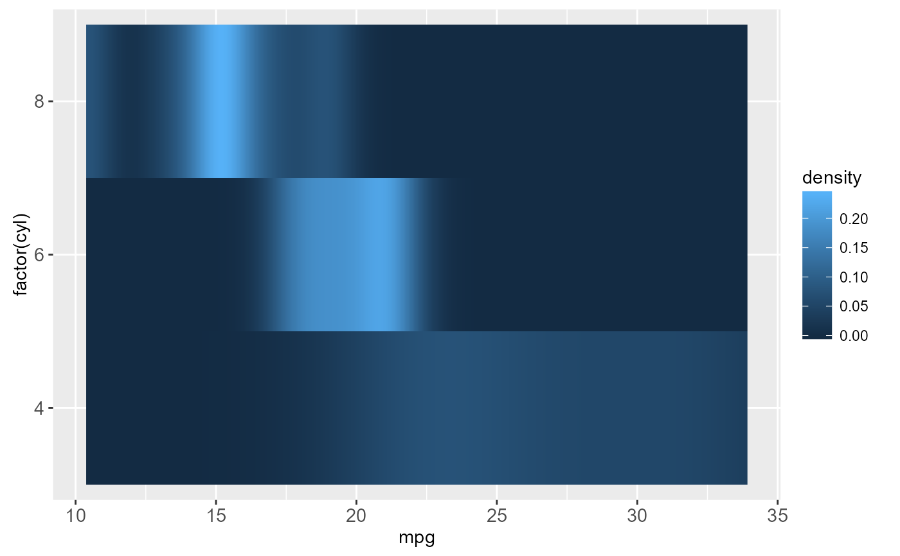
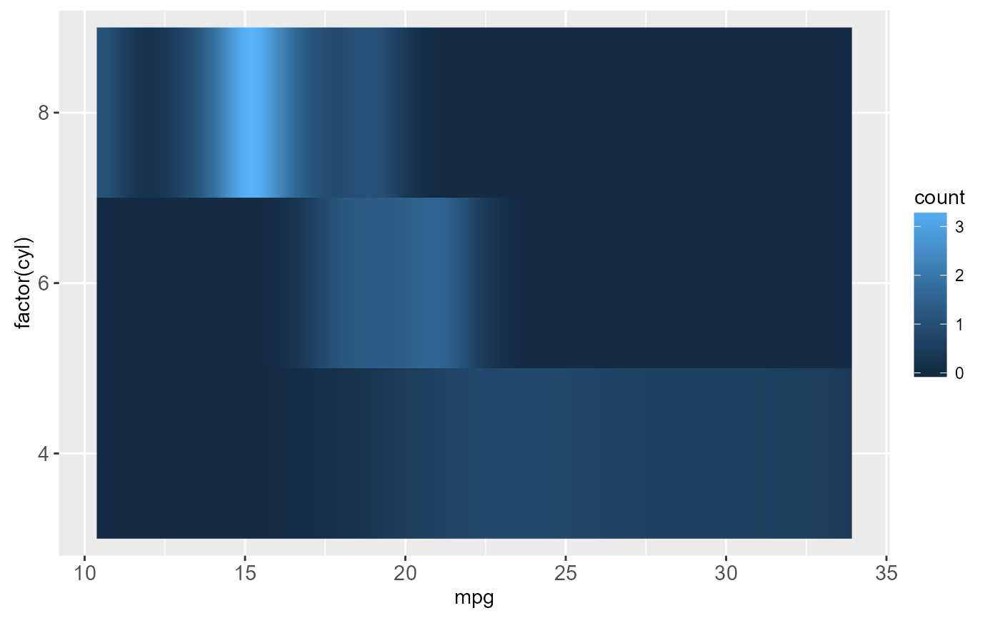

geom_rect and geom_tile do the same thing, but are
parameterised differently. geom_rect uses the locations of the four
corners (xmin, xmax, ymin and ymax).
geom_tile uses the center of the tile and its size (x,
y, width, height). geom_raster is a high
performance special case for when all the tiles are the same size.
Usage
geom_raster(
mapping = NULL,
data = NULL,
stat = "identity",
position = "identity",
...,
hjust = 0.5,
vjust = 0.5,
interpolate = FALSE,
na.rm = FALSE,
show.legend = NA,
inherit.aes = TRUE
)
geom_rect(
mapping = NULL,
data = NULL,
stat = "identity",
position = "identity",
...,
na.rm = FALSE,
show.legend = NA,
inherit.aes = TRUE
)
geom_tile(
mapping = NULL,
data = NULL,
stat = "identity",
position = "identity",
...,
na.rm = FALSE,
show.legend = NA,
inherit.aes = TRUE
)Arguments
- mapping
Set of aesthetic mappings created by
aesoraes_. If specified andinherit.aes = TRUE(the default), it is combined with the default mapping at the top level of the plot. You must supplymappingif there is no plot mapping.- data
The data to be displayed in this layer. There are three options:
If
NULL, the default, the data is inherited from the plot data as specified in the call toggplot.A
data.frame, or other object, will override the plot data. All objects will be fortified to produce a data frame. Seefortifyfor which variables will be created.A
functionwill be called with a single argument, the plot data. The return value must be adata.frame., and will be used as the layer data.- stat
The statistical transformation to use on the data for this layer, as a string.
- position
Position adjustment, either as a string, or the result of a call to a position adjustment function.
- ...
other arguments passed on to
layer. These are often aesthetics, used to set an aesthetic to a fixed value, likecolor = "red"orsize = 3. They may also be parameters to the paired geom/stat.- hjust, vjust
horizontal and vertical justification of the grob. Each justification value should be a number between 0 and 1. Defaults to 0.5 for both, centering each pixel over its data location.
- interpolate
If
TRUEinterpolate linearly, ifFALSE(the default) don't interpolate.- na.rm
If
FALSE(the default), removes missing values with a warning. IfTRUEsilently removes missing values.- show.legend
logical. Should this layer be included in the legends?
NA, the default, includes if any aesthetics are mapped.FALSEnever includes, andTRUEalways includes.- inherit.aes
If
FALSE, overrides the default aesthetics, rather than combining with them. This is most useful for helper functions that define both data and aesthetics and shouldn't inherit behaviour from the default plot specification, e.g.borders.
Aesthetics
geom_tile understands the following aesthetics (required aesthetics are in bold):
x
y
alpha
colour
fill
linetype
size
Examples
# The most common use for rectangles is to draw a surface. You always want
# to use geom_raster here because it's so much faster, and produces
# smaller output when saving to PDF
ggplot(faithfuld, aes(waiting, eruptions)) +
geom_raster(aes(fill = density))
# Interpolation smooths the surface & is most helpful when rendering images.
ggplot(faithfuld, aes(waiting, eruptions)) +
geom_raster(aes(fill = density), interpolate = TRUE)

# If you want to draw arbitrary rectangles, use geom_tile() or geom_rect()
df <- data.frame(
x = rep(c(2, 5, 7, 9, 12), 2),
y = rep(c(1, 2), each = 5),
z = factor(rep(1:5, each = 2)),
w = rep(diff(c(0, 4, 6, 8, 10, 14)), 2)
)
ggplot(df, aes(x, y)) +
geom_tile(aes(fill = z))

ggplot(df, aes(x, y)) +
geom_tile(aes(fill = z, width = w), colour = "grey50")

ggplot(df, aes(xmin = x - w / 2, xmax = x + w / 2, ymin = y, ymax = y + 1)) +
geom_rect(aes(fill = z, width = w), colour = "grey50")

# \donttest{
# Justification controls where the cells are anchored
df <- expand.grid(x = 0:5, y = 0:5)
df$z <- runif(nrow(df))
# default is compatible with geom_tile()
ggplot(df, aes(x, y, fill = z)) + geom_raster()
# zero padding
ggplot(df, aes(x, y, fill = z)) + geom_raster(hjust = 0, vjust = 0)

# Inspired by the image-density plots of Ken Knoblauch
cars <- ggplot(mtcars, aes(mpg, factor(cyl)))
cars + geom_point()

cars + stat_bin2d(aes(fill = ..count..), binwidth = c(3,1))

cars + stat_bin2d(aes(fill = ..density..), binwidth = c(3,1))

cars + stat_density(aes(fill = ..density..), geom = "raster", position = "identity")

cars + stat_density(aes(fill = ..count..), geom = "raster", position = "identity")

# }